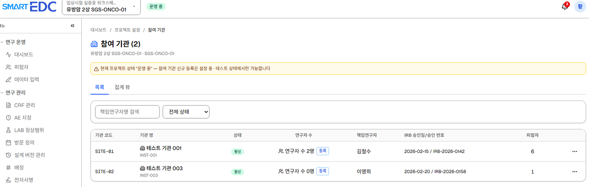
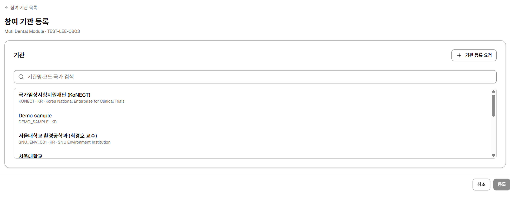
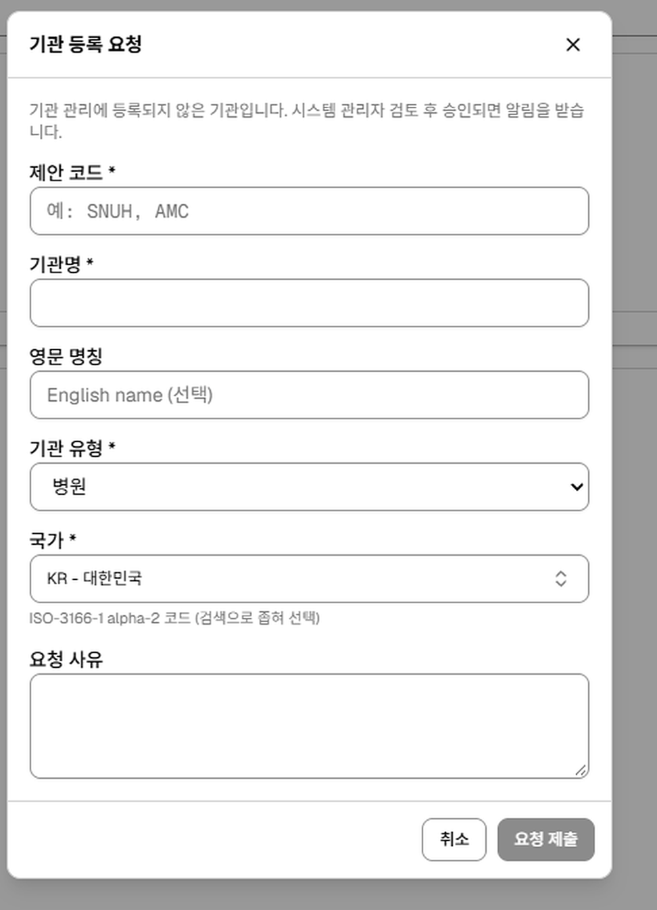
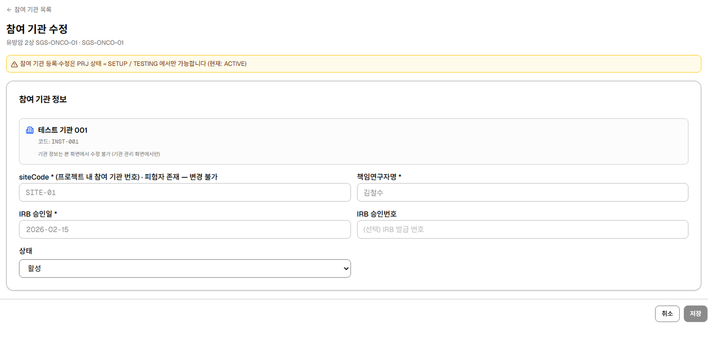
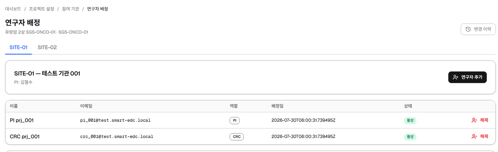
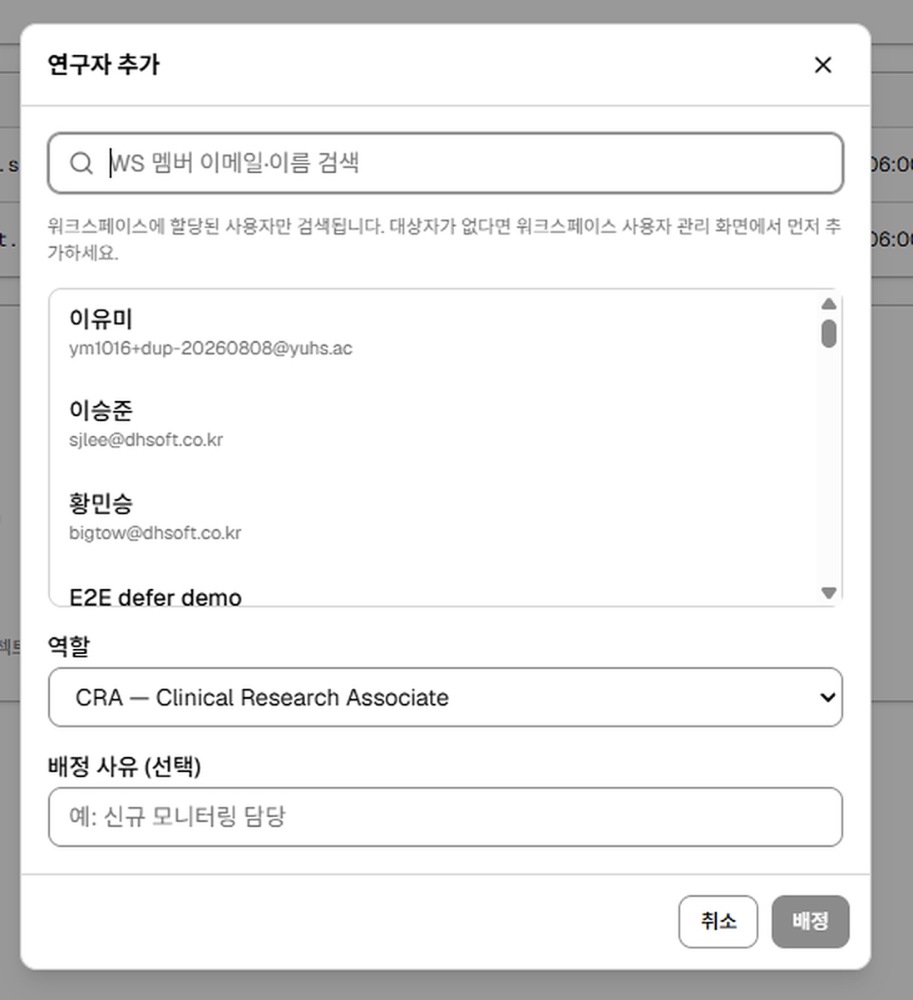
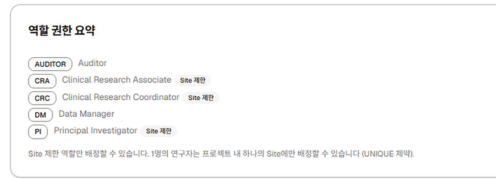

Teilnehmende Einrichtungen
SCR-PRJ-005·006·007 · Liste · Registrierung · Bearbeitung · Antrag auf Registrierung einer Einrichtung · Zuweisung des Forschungspersonals
Liste der teilnehmenden Einrichtungen
- 1.1Bildschirmaufbau
- 1.2Bedingungen für die Registrierung
1.1Bildschirmaufbau
Überblick
Auf diesem Bildschirm verwalten Sie die Einrichtungen (Site), die in diesem Projekt Probanden rekrutieren. Jede Einrichtung erhält einen verantwortlichen Prüfer und IRB-Genehmigungsdaten. Außerdem weisen Sie ihr das Forschungspersonal zu, das dort arbeitet. Probanden lassen sich erst registrieren, wenn eine teilnehmende Einrichtung vorhanden ist. Deshalb ist dies eine Aufbauarbeit, die vor der Probandenregistrierung abgeschlossen sein muss.
Bildschirmbeschreibung

Suche — Grenzt die Zeilen nach dem Namen des verantwortlichen Prüfers ein.
Statusfilter — Grenzt die Liste auf Aktiv oder Beendet ein.
Registrieren — Führt zur Zuweisung des Forschungspersonals für diese Einrichtung 3.1. Die Zahl links ist die Anzahl des aktuell zugewiesenen Forschungspersonals.
Zeilenaktionen — Es gibt zwei: Bearbeiten 2.3 und Forschungspersonal zuweisen 3.1. Das Beenden einer Einrichtung ist hier nicht möglich, denn wenn Sie das Projekt beenden, werden alle untergeordneten teilnehmenden Einrichtungen automatisch mit beendet.
Probandenanzahl — Ein Klick führt zur Probandenliste dieser Einrichtung.
Der Pfad lautet Dashboard / Projekteinstellungen / Teilnehmende Einrichtungen.
Die Zahl in Klammern neben dem Titel ist die Anzahl der registrierten teilnehmenden Einrichtungen.
Gelber Banner — „Projektstatus jetzt „Im Betrieb“. Neue teilnehmende Einrichtungen lassen sich nur im Status In Einrichtung oder Test registrieren.“ Solange dieser Banner angezeigt wird, erscheint keine Schaltfläche zum Registrieren 1.2.
Liste · Übersichtsansicht (Reiter) — Die Übersichtsansicht zeigt den Registrierungsstand je Einrichtung als Karten. Der Auditor kann die Übersichtsansicht nicht aufrufen.
Einrichtungscode · Einrichtungsname — Der Einrichtungscode ist kein Code der Einrichtung selbst, sondern die Nummer (siteCode), die Sie innerhalb dieses Projekts vergeben 1.2. Die kleine Schrift unter dem Einrichtungsnamen ist der Code aus dem Einrichtungsstamm.
Status — Aktiv oder Beendet.
Verantwortlicher Prüfer — Der Name, den Sie im Bildschirm zum Registrieren oder Bearbeiten eingegeben haben, wird unverändert angezeigt.
IRB-Genehmigungsdatum / Genehmigungsnummer — Die Genehmigungsnummer ist ein optionales Feld. Ist sie leer, wird — angezeigt.
Weitere Wege zu diesem Bildschirm
- • Linkes Menü Einstellungen > Teilnehmende Einrichtungen
- • Verknüpfung Teilnehmende Einrichtungen auf dem Bildschirm Projekteinstellungen
- • Verknüpfung Zuweisung des Forschungspersonals auf dem Bildschirm Projekteinstellungen (öffnet sich mit hervorgehobener Spalte Anzahl Forschungspersonal)
- • Zeile oder Gesamtansicht des Widgets Teilnehmende Einrichtungen auf dem Projekt-Dashboard
Zu beachten
Leicht missverständliches Verhalten
- • Der verantwortliche Prüfer (PI) kann nur die Zeile der eigenen Einrichtung bearbeiten und zuweisen. In den Zeilen anderer Einrichtungen wird kein Aktionsmenü angezeigt. Forschungspflegekräfte (CRC), klinische Monitore (CRA) und Auditoren können die Liste nur lesen.
1.2Bedingungen für die Registrierung
Überblick
Dies ist derselbe Bildschirm wie zuvor, nur für ein anderes Projekt. Dieses Projekt befindet sich noch In Einrichtung. Deshalb fehlt der gelbe Banner, und oben rechts erscheint die Schaltfläche Teilnehmende Einrichtung registrieren. Teilnehmende Einrichtungen lassen sich nur in den Stufen In Einrichtung und Test neu anlegen oder ändern. Legen Sie die Einrichtungsstruktur deshalb fest, bevor der Betrieb beginnt.
Bildschirmbeschreibung

+ Teilnehmende Einrichtung registrieren — Fügt eine neue teilnehmende Einrichtung hinzu 2.1. Die Schaltfläche erscheint nur, wenn das Projekt In Einrichtung oder Test ist, und zusätzlich nur für Personen mit entsprechender Berechtigung.
Registrieren — Führt zur Zuweisung des Forschungspersonals 3.1.
Unter dem Titel stehen Projektname und Protokollnummer. So prüfen Sie, ob es sich um ein anderes Projekt handelt als zuvor.
Die Reiter Liste · Übersichtsansicht sind unabhängig vom Projektstatus gleich aufgebaut.
Der Einrichtungscode hat denselben Wert wie der Einrichtungscode im Stamm. Lassen Sie beim Registrieren die Nummer der teilnehmenden Einrichtung leer, wird der Einrichtungscode direkt übernommen. Sie können die Nummer aber auch selbst im Format SITE-01 festlegen.
Verantwortlicher Prüfer ist ein Freitextfeld. Daher wird auch ein Wert, der kein echter Name ist, unverändert angezeigt.
IRB-Genehmigungsnummer nicht ausgefüllt — Das Feld ist optional, daher wird — angezeigt. Das IRB-Genehmigungsdatum ist Pflicht.
Probandenanzahl — Probanden, die im Status In Einrichtung registriert wurden, sind Testdaten und werden beim Start des Betriebs vollständig gelöscht.
Mögliche Aktionen je Projektstatus
| Projektstatus | Teilnehmende Einrichtungen registrieren und bearbeiten | Forschungspersonal zuweisen und Zuweisung aufheben |
|---|---|---|
| In Einrichtung · Test | Möglich | Möglich |
| Im Betrieb | Nicht möglich — Banner wird angezeigt · Eingabefelder deaktiviert | Möglich |
| Beendet · Archiviert | Nicht möglich | Nicht möglich — nur Lesen |
Zu beachten
Unbedingt prüfen Datenschäden · Formular nicht abschließbar
- • Sobald der Betrieb beginnt, lassen sich keine teilnehmenden Einrichtungen mehr hinzufügen. Dagegen bleibt die Zuweisung von Forschungspersonal auch im Betrieb möglich, denn der Personalwechsel gehört zum normalen Ablauf. Verwechseln Sie diese beiden Regeln nicht. Prüfen Sie vor der Umstellung in den Betrieb, ob alle beteiligten Einrichtungen erfasst sind.
Teilnehmende Einrichtung registrieren · bearbeiten
- 2.1Einrichtung auswählen
- 2.2Antrag auf Registrierung einer Einrichtung
- 2.3Bearbeitungsbildschirm
2.1Einrichtung auswählen
Überblick
Dies ist der erste Schritt beim Hinzufügen einer teilnehmenden Einrichtung. Sie geben die Einrichtung nicht neu ein, sondern wählen sie aus der Liste bereits registrierter Einrichtungen aus. Nach der Auswahl folgen darunter Felder für Nummer der teilnehmenden Einrichtung, Name des verantwortlichen Prüfers und IRB-Genehmigungsdaten (zum Aufbau der Felder siehe 2.3).
Bildschirmbeschreibung

Einrichtung suchen — Grenzt die Liste nach Name, Code oder Land ein.
Einrichtung auswählen — Wählen Sie eine Einrichtung aus der Liste. Erst danach werden die Eingabefelder darunter und Registrieren freigegeben.
+ Registrierung einer Einrichtung beantragen — Verwenden Sie diese Schaltfläche, wenn die gesuchte Einrichtung nicht in der Liste steht 2.2.
Registrieren — Speichert die Eingaben und kehrt zur Liste zurück. Solange nicht alle Angaben Einrichtung · Nummer der teilnehmenden Einrichtung · Name des verantwortlichen Prüfers · IRB-Genehmigungsdatum ausgefüllt sind, ist die Schaltfläche abgeblendet und nicht auswählbar.
← Liste der teilnehmenden Einrichtungen — Kehrt ohne Speichern zur Liste zurück.
Zur Kontrolle, zu welchem Projekt Sie hinzufügen, stehen Projektname und Protokollnummer oben.
Karte Einrichtung — Hier wählen Sie die Einrichtung. Die Angaben zur Einrichtung selbst (Bezeichnung · Adresse · Typ) können Sie hier nicht ändern.
Die kleine Schrift bei jedem Eintrag zeigt Einrichtungscode · Land · englische Bezeichnung. Haben Einrichtungen ähnliche Namen, unterscheiden Sie sie über diese Angaben.
Die Liste ist scrollbar. Die vier sichtbaren Einträge sind nicht alle — grenzen Sie die Liste mit der Suche ein, um sicherzugehen.
Abbrechen — Verwirft die Eingaben und kehrt zur Liste zurück.
Zu beachten
Unbedingt prüfen Datenschäden · Formular nicht abschließbar
- • Wählen Sie die falsche Einrichtung, können Sie sie nach der Registrierung nicht mehr ändern. Auf dem Bearbeitungsbildschirm wird der Bereich zur Auswahl der Einrichtung gar nicht angezeigt 2.3. Um die Einrichtung zu wechseln, müssen Sie die teilnehmende Einrichtung neu registrieren. Prüfen Sie daher vor der Auswahl Code und Land.
2.2Antrag auf Registrierung einer Einrichtung
Überblick
Dieses Fenster verwenden Sie, wenn die teilnehmende Einrichtung nicht in der Einrichtungsliste steht. Die Einrichtung wird hier nicht direkt angelegt. Sie erscheint erst in der Liste, wenn ein Systemadministrator sie geprüft und genehmigt hat. Dann erhalten Sie eine Benachrichtigung. Die Registrierung der teilnehmenden Einrichtung führen Sie deshalb erst nach der Genehmigung durch.
Bildschirmbeschreibung

Vorgeschlagener Code — Pflichtfeld. Geben Sie einen kurzen Code zur Kennzeichnung der Einrichtung an (z. B. „SNUH“ · „AMC“). Den endgültigen Code legt der Administrator fest.
Einrichtungsname — Pflichtfeld. Geben Sie die offizielle Bezeichnung ein.
Englische Bezeichnung — Optional. Geben Sie sie an, wenn bei einer Studie in mehreren Ländern eine Unterscheidung nötig ist.
Einrichtungstyp — Pflichtfeld. Wählen Sie den Typ aus, zum Beispiel Krankenhaus.
Land — Pflichtfeld. Der Standardwert ist Südkorea. Grenzen Sie die Auswahl durch Suche ein.
Begründung des Antrags — Optional. Wenn Sie eine Begründung angeben, beschleunigt das die Prüfung durch den Administrator.
Antrag absenden — Sendet den Antrag. Das Fenster schließt sich nicht sofort, sondern wechselt zu einem Abschlusshinweis. Schließen Sie es erst, nachdem Sie den Inhalt geprüft haben.
Hinweistext — „Diese Einrichtung ist in der Einrichtungsverwaltung nicht registriert. Nach Prüfung durch den Systemadministrator und Genehmigung erhalten Sie eine Benachrichtigung.“
Schließen — Schließt das Fenster, ohne einen Antrag zu stellen.
Hinweis zum Land — „ISO-3166-1-Alpha-2-Code (durch Suche eingrenzen und auswählen)“. Maßgeblich ist der zweistellige Ländercode. Werte, die nicht in der Liste stehen, lassen sich nicht eingeben.
Abbrechen — Verwirft die Eingaben und schließt das Fenster.
Zu beachten
Leicht missverständliches Verhalten
- • Liegt bereits ein wartender Antrag mit demselben Code vor, wird der Antrag abgelehnt. Stellen Sie in diesem Fall keinen neuen Antrag, sondern warten Sie, bis der Administrator die Prüfung abgeschlossen hat. Möglicherweise hat jemand dieselbe Einrichtung bereits beantragt. Bis zur Genehmigung können Sie die Einrichtung nicht als teilnehmende Einrichtung hinzufügen.
2.3Bearbeitungsbildschirm
Überblick
Dieser Bildschirm ändert die Werte einer registrierten teilnehmenden Einrichtung. Die Eingabefelder entsprechen dem Registrierungsbildschirm, aber die Einrichtung selbst lässt sich nicht ändern. Die Aufnahme zeigt ein Projekt im Betrieb, daher sind alle Felder deaktiviert. In den Stufen In Einrichtung und Test können Sie die Werte an derselben Stelle ändern und speichern.
Bildschirmbeschreibung

Nummer der teilnehmenden Einrichtung (siteCode) — Die Nummer, mit der diese Einrichtung innerhalb des Projekts angesprochen wird. Sobald auch nur ein Proband registriert ist, lässt sie sich nicht mehr ändern.
Name des verantwortlichen Prüfers — Pflichtfeld. Er wird unverändert in der Spalte Verantwortlicher Prüfer der Liste angezeigt.
IRB-Genehmigungsdatum — Pflichtfeld.
IRB-Genehmigungsnummer — Optional. Ist das Feld leer, wird in der Liste — angezeigt.
Status — Wählen Sie Aktiv oder Beendet. Der verantwortliche Prüfer (PI) kann dieses Feld nicht ändern.
Speichern — Übernimmt die Änderungen und kehrt zur Liste zurück.
Gelber Banner — „Registrierung und Bearbeitung teilnehmender Einrichtungen sind nur im Projektstatus PRJ = SETUP / TESTING möglich.“ Die Angabe in Klammern ist der aktuelle Status. Wird dieser Banner angezeigt, können Sie nicht speichern.
Die Einrichtungsangaben lassen sich auf diesem Bildschirm nicht ändern — Bezeichnung, Typ und Land der Einrichtung ändern Sie nur im Bildschirm Einrichtungsverwaltung. Hier ändern Sie ausschließlich die Teilnahmebedingungen für dieses Projekt.
Die ausgewählte Einrichtungsbezeichnung und der Einrichtungscode — Auf dem Bearbeitungsbildschirm können Sie keine andere Einrichtung auswählen.
Das Etikett nennt zusätzlich den Grund für die Sperre — „Proband vorhanden — Änderung nicht möglich“. Auch der verantwortliche Prüfer (PI) kann dieses Feld beim Bearbeiten nicht ändern.
Abbrechen — Verwirft die Änderungen und kehrt zur Liste zurück.
← Liste der teilnehmenden Einrichtungen — Dieselbe Funktion.
Zu beachten
Unbedingt prüfen Datenschäden · Formular nicht abschließbar
- • Die Nummer der teilnehmenden Einrichtung bleibt fest, sobald der erste Proband entsteht. Die bereits vergebenen Probandenkennungen enthalten diese Nummer. Wollen Sie das Nummernsystem ändern, erledigen Sie das deshalb vor der Probandenregistrierung.
Zuweisung des Forschungspersonals
- 3.1Zuweisungsübersicht
- 3.2Forschungspersonal hinzufügen
- 3.3Zuweisungsregeln
3.1Zuweisungsübersicht
Überblick
Auf diesem Bildschirm legen Sie fest, wer in welcher Einrichtung arbeitet. Für jede teilnehmende Einrichtung gibt es einen Reiter, und darin steht das Forschungspersonal, das dieser Einrichtung zugewiesen ist. Die Zuweisung ist auch im laufenden Betrieb jederzeit möglich, denn der Personalwechsel gehört zum laufenden Projekt.
Bildschirmbeschreibung

Forschungspersonal hinzufügen — Ordnen Sie dieser Einrichtung eine Person zu 3.2.
Einrichtungs-Reiter — Sind mehrere teilnehmende Einrichtungen vorhanden, werden sie in Reitern getrennt dargestellt. Dem verantwortlichen Prüfer (PI) wird nur der Reiter der eigenen Einrichtung angezeigt.
Zuweisung aufheben — Entfernt die Zuweisung. Sie müssen mindestens 5 Zeichen als Grund eingeben, bevor Sie ausführen können. Im Bestätigungsfenster wird der Umfang der Auswirkung angezeigt 3.3.
Der Pfad lautet Dashboard / Projekteinstellungen / Teilnehmende Einrichtungen / Zuweisung des Forschungspersonals.
Änderungshistorie — Derzeit nicht auswählbar. Zuweisungen und Aufhebungen werden im System gespeichert. Die Anzeige auf dem Bildschirm ist noch in Vorbereitung.
Die Nummer der teilnehmenden Einrichtung · Einrichtungsname · Verantwortlicher Prüfer der gewählten Einrichtung. Prüfen Sie hier, welche Einrichtung Sie gerade ansehen, bevor Sie arbeiten.
Rolle — Die Rolle, die diese Person in dieser Einrichtung hat 3.3.
Zuweisungsdatum — Zeitpunkt der Zuweisung.
Status — Aktiv oder Aufgehoben. Eine aufgehobene Person verschwindet nicht aus der Liste, sondern bleibt als Aufgehoben stehen.
E-Mail — Unterscheidet Personen mit gleichem Namen.
Zu beachten
Leicht missverständliches Verhalten
- • Beim Aufheben werden keine Daten gelöscht. Die Zuweisung wird nicht physisch entfernt, sondern deaktiviert. Die Eingaben und Signaturen, die diese Person bis dahin gemacht hat, bleiben erhalten. Bei klinischen Studien muss jederzeit nachvollziehbar sein, wer wann was getan hat.
3.2Forschungspersonal hinzufügen
Überblick
In diesem Fenster ordnen Sie der gewählten Einrichtung eine Person zu. Sie können nicht beliebige Personen auswählen, sondern nur Benutzer, die bereits dem Arbeitsbereich angehören. Wählen Sie Person und Rolle aus und klicken Sie auf Zuweisen. Dann wird die Zuweisung sofort wirksam.
Bildschirmbeschreibung

Suche — Grenzt die Liste nach E-Mail oder Name ein.
Benutzer auswählen — Wählen Sie eine Person aus der Liste. Personen, die dieser Einrichtung bereits zugewiesen sind, werden mit Bereits zugewiesen markiert und lassen sich nicht auswählen.
Rolle — Wählen Sie die Rolle, die diese Person in der Einrichtung übernimmt. Zur Auswahl stehen nur die drei Rollen, die pro Einrichtung arbeiten 3.3.
Zuweisungsgrund — Optional. Bei Zuweisungen mit besonderem Anlass, etwa einem Austausch oder einer Verstärkung, lohnt sich ein Eintrag, damit Sie es später leichter nachvollziehen können.
Zuweisen — Wendet die Zuweisung an. Solange nicht sowohl Person als auch Rolle gewählt sind, ist die Schaltfläche abgeblendet und nicht auswählbar.
Schließen — Schließt das Fenster, ohne zuzuweisen.
Hinweistext — „Es werden nur Benutzer gefunden, die dem Arbeitsbereich zugewiesen sind. Fehlt die gesuchte Person, fügen Sie sie zuerst im Bildschirm Benutzerverwaltung des Arbeitsbereichs hinzu.“
Die kleine Schrift bei jedem Eintrag ist die E-Mail. Unterscheiden Sie Personen mit gleichem Namen über diese Angabe.
Die Liste ist scrollbar. Die wenigen sichtbaren Einträge sind nicht alle — grenzen Sie die Liste mit der Suche ein, um sicherzugehen.
Abbrechen — Schließt das Fenster.
Zu beachten
Leicht missverständliches Verhalten
- • Taucht die gesuchte Person nicht in der Liste auf, ist sie noch kein Mitglied des Arbeitsbereichs. In diesem Fenster können Sie kein Konto anlegen. Fügen Sie die Person zuerst im Bildschirm Benutzerverwaltung des Arbeitsbereichs hinzu und kehren Sie danach hierher zurück. Auch eine andere Schreibweise des Namens bringt sie nicht zum Vorschein.
3.3Zuweisungsregeln
Überblick
Unter dem Zuweisungsbildschirm steht eine Karte, die zeigt, welche Rollen Sie zuweisen können. Es gelten zwei Regeln: Zugewiesen werden nur Rollen, die pro Einrichtung arbeiten, und eine Person ist in einem Projekt nur einer Einrichtung zugewiesen. Beide Regeln setzt das System durch. Eine Zuweisung, die dagegen verstößt, wird daher nicht gespeichert.
Bildschirmbeschreibung

Zusammenfassung der Rollenrechte — Listet alle Rollen auf, die in diesem Projekt definiert sind. Ob eine Rolle zugewiesen werden kann, zeigt die Markierung Site-Beschränkung unten.
Rollen ohne Site-Beschränkung (Auditor · Datenmanager) sehen alle Einrichtungen gemeinsam. Deshalb weisen Sie sie keiner bestimmten Einrichtung zu. Diese Rollen vergeben Sie auf dem Bildschirm Rechteverwaltung auf Projektebene.
Site-Beschränkung — Kennzeichnet Rollen, die nur die eigene Einrichtung betreffen. Im Auswahlfeld Rolle des Fensters Forschungspersonal hinzufügen erscheinen nur Rollen mit dieser Markierung.
Die Hinweistexte des Bildschirms wiederholen beide Regeln: „Es können nur Rollen mit Site-Beschränkung zugewiesen werden. Eine Person kann im Projekt nur einer Site zugewiesen werden (UNIQUE-Einschränkung).“
Fünf Rollen und ihre Zuweisbarkeit
| Rolle | Aufgabe | Einrichtungszuweisung |
|---|---|---|
| PI Verantwortlicher Prüfer | Verantwortlich für die Probanden und Daten der eigenen Einrichtung | Möglich |
| CRC Forschungspflegekraft | Gibt die Probandendaten der eigenen Einrichtung ein | Möglich |
| CRA klinischer Monitor | Gleicht die Daten der eigenen Einrichtung mit den Quelldaten ab | Möglich |
| DM Datenmanager | Führt die Daten aller Einrichtungen zusammen und verwaltet sie | Nicht möglich |
| AUDITOR Auditor | Sieht alle Einrichtungen nur lesend ein | Nicht möglich |
Zu beachten
Unbedingt prüfen Datenschäden · Formular nicht abschließbar
- • Wird eine Zuweisung aufgehoben, endet auch die Rolle im Projekt. Einrichtungszuweisung und Rollenzuweisung gehen Hand in Hand. Um eine Person in eine andere Einrichtung zu verschieben, heben Sie die Zuweisung zuerst auf und weisen die Person danach in der neuen Einrichtung erneut zu. Eine gleichzeitige Zuweisung zu zwei Einrichtungen ist nicht möglich.